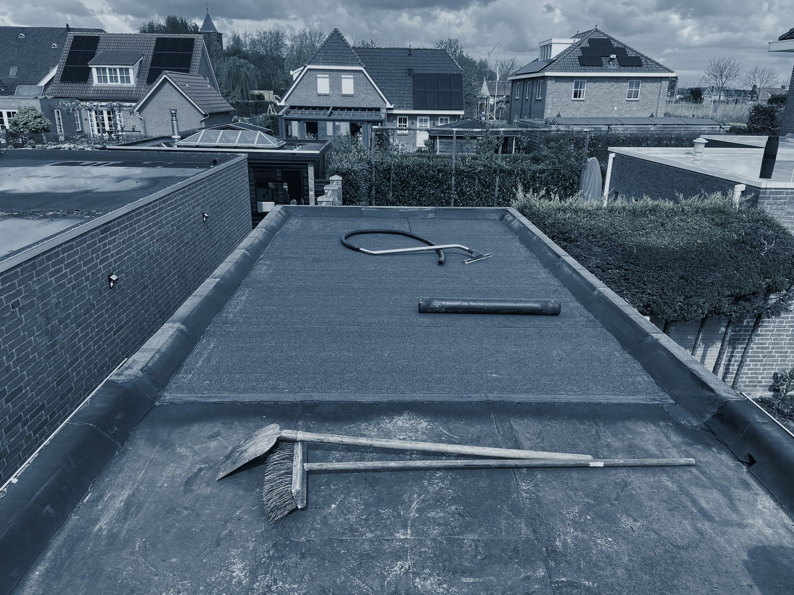
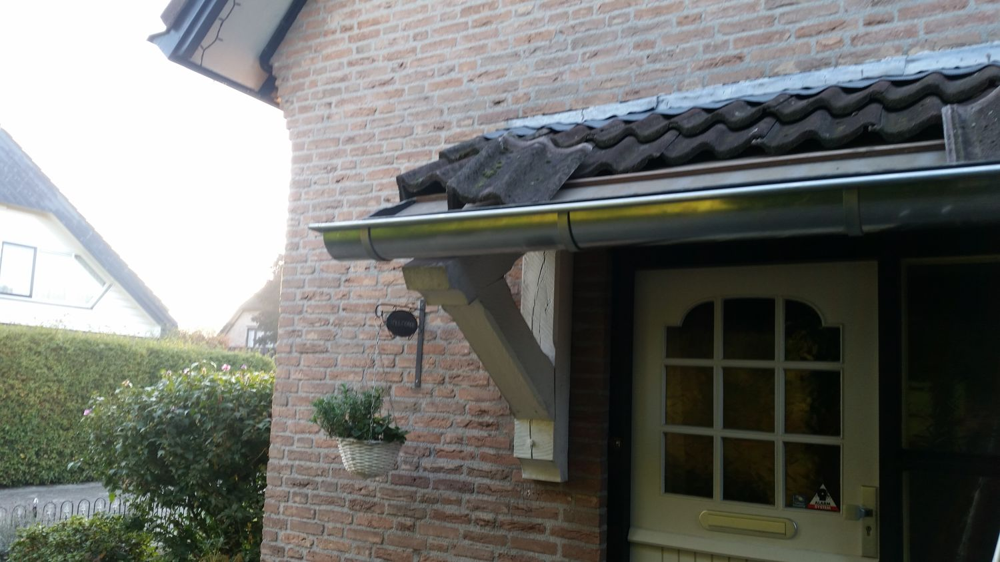
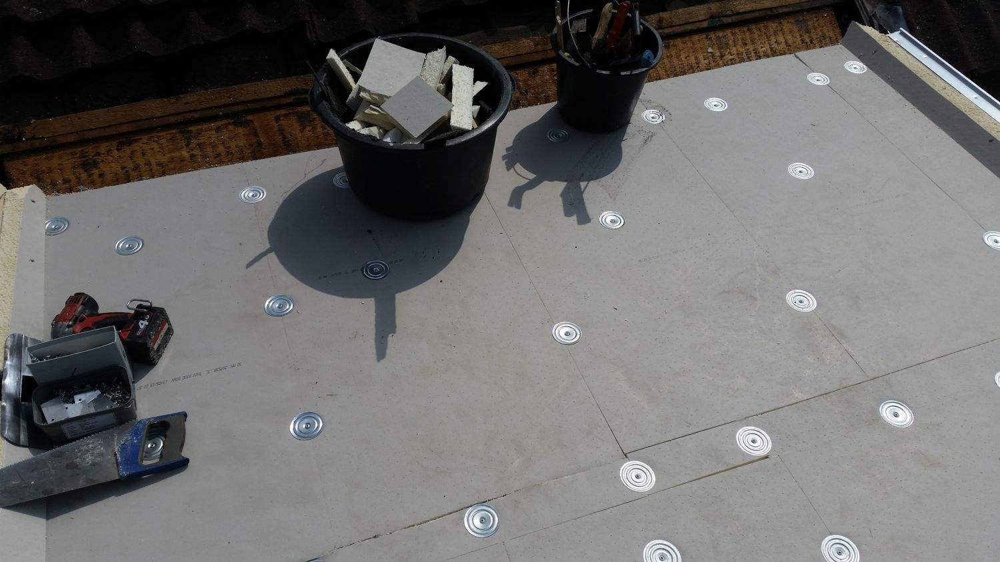
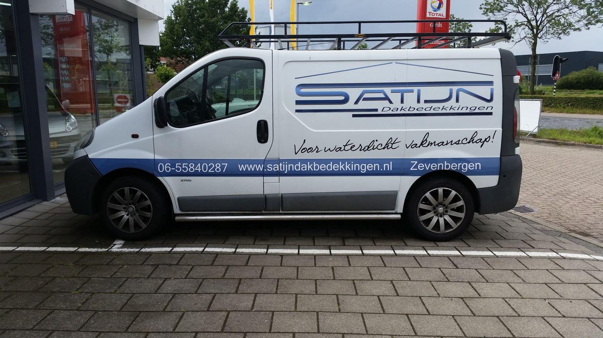

Waterdicht
Dakdekker in Zevenbergen, voor waterdicht vakmanschap op uw dak.
Is het spoed?
Niet elke lekkage vraagt om direct ingrijpen. Kies wat u ziet, dan weet u of u nu moet bellen.
Van scheurtje tot heel nieuw dak.
Dakreparatie
Van een klein scheurtje tot grotere schade. Wij komen snel ter plaatse, voor particulieren en bedrijven.
Dakrenovatie
Garagedak, plat dak, schuur of bedrijfspand: oude bedekking eraf, ondergrond nagekeken, nieuwe bedekking erop.
Dakonderhoud
Wij controleren op zwakke plekken, verwijderen vuil en doen kleine reparaties voordat het grote worden.
Goten en zinkwerk
Zinken goten en hemelwaterafvoeren, nieuw of hersteld. Ook mastgoten en bakgoten op maat.
Houtherstel
Rot aan boeiboorden, dakbeschot of gootbekisting vervangen wij, ook met Trespa of Keralit.

Elk dak zijn eigen laag.
Platte en licht hellende daken vragen om een andere bedekking dan een tuinhuis. Wij werken met al deze materialen en adviseren wat bij uw dak past.
Bitumen
25 tot 30 jaar waterdichtOok wel dakleer. Bij goed onderhoud lang waterdicht en eenvoudig te herstellen. Wij werken met APP en SBS.
EPDM
Gemiddeld 40 tot 50 jaarElastisch rubber, vaak in één stuk gelegd. Daardoor weinig tot geen naden, en het is geschikt voor groendaken.
PVC
30 tot 40 jaarAangebracht met hete lucht, zonder open vuur. Licht van gewicht en te krijgen in lichtgrijs, antraciet en wit.
Shingles
Voor tuinhuis, schuur, carportLicht en flexibel, in verschillende vormen en kleuren: zwart, rood, groen, bruin of grijs.
Zink
Goten en maatwerkWij houden rekening met uitzetten en krimpen, en passen daar de juiste expansiedelen op toe.
Een scheurtje wordt duur als u wacht.
Daarom adviseren wij een jaarlijkse inspectie. Kleine gebreken verhelpen wij dan direct.
Zo komt er een nieuw dak op.

Inspectie en advies
We beoordelen de dakbedekking en de onderconstructie.
Oude bedekking eraf
Volledig verwijderd, en het afval voeren wij netjes af.
Ondergrond nakijken
Beschadigd dakbeschot of isolatie vervangen wij.
Nieuwe dakbedekking
A-kwaliteit bitumen, EPDM of een ander materiaal.
Randen en aansluitingen
Alle details worden vakkundig afgewerkt.
Oplevering met garantie
U ontvangt uw 10 jaar waterdichtheidsgarantie.
garantie op waterdichtheid.
Wij werken uitsluitend met gecertificeerde A-kwaliteitsproducten. In de offerte ziet u in één oogopslag welke oplossing past bij uw dak, uw woning en uw budget.uit 145 Google-reviews. Dit noemen klanten:
- Professioneel, van offerte tot uitvoering
- Platte daken van garage en huis netjes vervangen
- Duidelijke en snelle communicatie
- Afspraken worden nagekomen
- Ze kennen het materiaal
Vanuit Zevenbergen door West-Brabant.
Voor particulieren, bedrijven en VvE's. Wij werken onder andere in:
- Zevenbergen
- Bavel
- Breda
- Etten-Leur
- Fijnaart
- Heijningen
- Hoeven
- Klundert
- Made
- Moerdijk
- Noordhoek
- Oosterhout
- Oud-Gastel
- Oudenbosch
- Prinsenbeek
- Roosendaal
- Standdaarbuiten
- Terheijden
- Ulvenhout
- Wagenberg
- Willemstad
- Zevenbergschen Hoek
Droog houden? Bel ons.
06 55 84 02 87
Open
| ma–za | 06:00–22:00 |
| zo | gesloten |